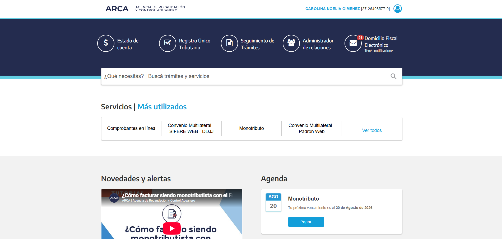
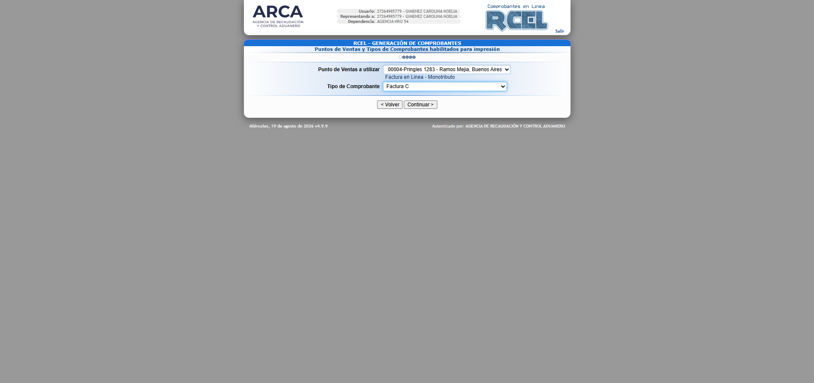
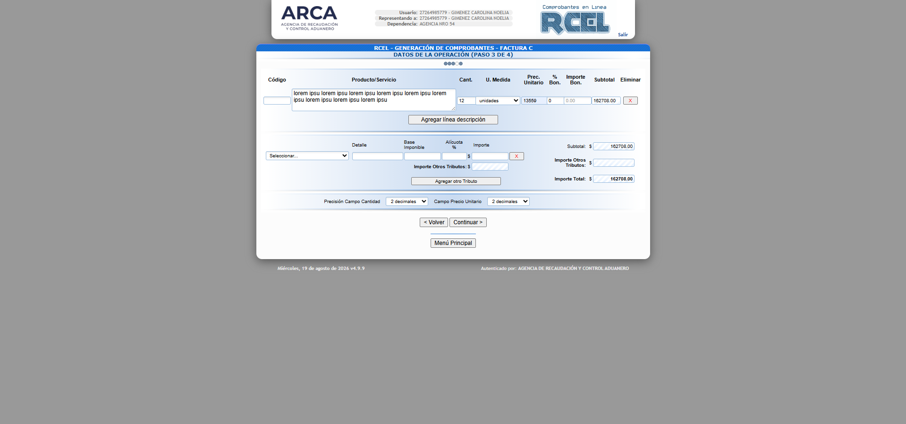

Cómo emitir tu Factura C
Seguí este paso a paso para facturar tus prestaciones correctamente en el portal de ARCA.
Paso 1: Ingreso al sistema
Ingresá tu número de CUIT y posteriormente tu Clave Fiscal para acceder al portal.
Paso 2: Comprobantes en línea
Dentro de los servicios más utilizados, seleccioná la opción "Comprobantes en línea" y luego hacé clic en tu nombre (la empresa a representar).

Paso 3: Generar Comprobante
En el menú principal del régimen de comprobantes, seleccioná "Generar Comprobantes". Luego, elegí tu punto de venta habitual y en Tipo de Comprobante seleccioná "Factura C".

Paso 4: Conceptos y Fechas
En Conceptos a incluir, elegí "Productos y Servicios" (o lo que corresponda a tu prestación). Determiná el rango de fechas del período facturado y la fecha de vencimiento para el pago.
Paso 5: Datos del Receptor
Completá los datos de la Obra Social o paciente: Condición frente al IVA, CUIT y marcá la condición de venta (por ejemplo, Cuenta Corriente).
Paso 6: Detalle de la Operación
Ingresá la descripción exacta de la prestación brindada, la unidad de medida, la cantidad y el precio unitario del nomenclador. Finalmente, confirmá los datos para imprimir o descargar el PDF.

¿Te quedó alguna duda?
Si preferís ver el proceso en acción, te compartimos un tutorial detallado con el paso a paso.
Ver video en YouTube ▶